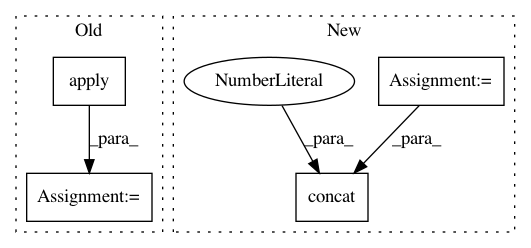

a3b39f9e6e7e1b33a3eb9919923d939430b60b86,QUANTAXIS/QAFetch/QATdx.py,,QA_fetch_get_stock_min,#Any#Any#Any#Any#Any#Any#,255
Before Change
inplace=False).set_index("datetime", drop=False, inplace=False)
data["datetime"] = data["datetime"].apply(lambda x: str(x)[0:19])
data["date"] = data["datetime"].apply(lambda x: str(x)[0:10])
data["date_stamp"] = data["date"].apply(
lambda x: QA_util_date_stamp(x))
data["time_stamp"] = data["datetime"].apply(
lambda x: QA_util_time_stamp(x))
data["type"] = type_
print(data)
After Change
level, type_ = 3, "60min"
with api.connect(ip, port):
data = pd.concat([api.to_df(api.get_security_bars(level,
market_code, code, (25 - i) * 800, 800)) for i in range(26)], axis=0)
return data\
.assign(datetime=pd.to_datetime(data["datetime"]), code=code)\
.drop(["year", "month", "day", "hour", "minute"], axis=1, inplace=False)\
.set_index("datetime", drop=False, inplace=False)\
In pattern: SUPERPATTERN
Frequency: 3
Non-data size: 4
Instances
Project Name: QUANTAXIS/QUANTAXIS
Commit Name: a3b39f9e6e7e1b33a3eb9919923d939430b60b86
Time: 2017-09-01
Author: yutiansut@qq.com
File Name: QUANTAXIS/QAFetch/QATdx.py
Class Name:
Method Name: QA_fetch_get_stock_min
Project Name: has2k1/plotnine
Commit Name: 190065554d8905884dff948e4bb655d431d7eec3
Time: 2015-04-20
Author: has2k1@gmail.com
File Name: ggplot/stats/stat.py
Class Name: stat
Method Name: _calculate_groups
Project Name: QUANTAXIS/QUANTAXIS
Commit Name: a3b39f9e6e7e1b33a3eb9919923d939430b60b86
Time: 2017-09-01
Author: yutiansut@qq.com
File Name: QUANTAXIS/QAFetch/QATdx.py
Class Name:
Method Name: QA_fetch_get_stock_latest